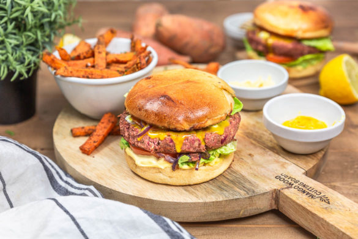

Burgers végétariens et steak de lentilles

Hello les gourmands!!! Aujourd’hui je vous retrouve avec une recette bien bien gourmande puisqu’il s’agit d’un bon burger végétarien préparé à partir d’un steak de lentilles.
Il y a quelque temps de ça j’avais eu une discussion avec une amie qui associait les burgers végétariens à des burgers 100% healthy, uniquement préparé à partir de légumes (et avec peu de calories). Et elle ne se voyait pas se priver de son petit plaisir qui était de manger de temps en temps quelque chose de bien gourmand sans trop penser aux légumes etc… Avec cette nouvelle recette de burger végétarien j’ai donc voulu lui montrer que végétarien n’est pas synonyme de privation et qu’un burger végétarien peut être encore plus décadent qu’un burger préparé avec de la viande ;)!!
J’ai voulu innover aussi du côté des steaks (mes préférés restent tout de même ce que vous trouverez ici) en préparant des steaks de lentilles que j’ai assaisonnés avec différentes épices. Comme vous pouvez le voir sur la photo rien que le visuel est assez bluffant (merci à la betterave, qui, mélangée aux lentilles a su apporter cette « jolie » couleur). Pour le reste on a donc décidé de faire un burger classique (vous pouvez y ajouter du cheddar si vous souhaitez réaliser un cheeseburger 😉 ). Il y a donc de la mayonnaise, de la sucrine, quelques tranches de tomates, des oignons caramélisés et une délicieuse sauce de moutarde Savora (moutarde au curry et au curcuma) à laquelle on a ajouté un peu de sirop d’érable! Je peux vous dire que le fast-food d’à côté n’a qu’à bien se tenir car on s’est vraiment vraiment régalé!!! J’avais servi ces burgers avec des frites de patates douces et c’était parfait ♥ (rien que d’écrire la recette sur le blog me fait saliver^^)
Ingrédients
- Lentilles cuites égouttées - 250g
- Betterave - 20g
- Noix de cajou - 35g
- Moutarde (pour nous la Savora) - 1 càc
- Sauce soja - 1 càs
- Chapelure - 40g
- Huile neutre (tournesol, coco etc..) - 1 càc
- Sel, poivre - à votre convenance
- Paprika - 1 càc (facultatif) - vous pouvez remplacer par l'épice de votre choix
- Pains burgers (maison) - 2
- Moutarde - 3 càs
- Curry - 1 càc
- Curcuma - 1/2 càc
- Sirop d'érable - 3 càs
- Tomates, sucrine, mayonnaise
- Oignon rouges caramélisés
Instructions
- Mixez les lentilles (bien égouttées), les noix de cajou, la betterave, la sauce soja, la moutarde, sel, paprika
- On veut obtenir un hachis grossier (on ne veut pas une pâte lisse ni une purée)
- Versez le hachis obtenu dans un grand saladier
- Ajoutez la chapelure, mélangez
- Laissez reposer 10-15 minutes (la chapelure va absorber l'humidité)
- Formez vos steaks de lentilles selon la taille de vos pains (il est donc possible d'en faire plus que deux si vos burgers sont plus petits que les miens)
- Préparez la sauce en mélangeant les différents ingrédients jusqu'à obtenir une sauce homogène
- Faites toaster les pains
- Tartinez-les de mayonnaise,
- Ajoutez des feuilles de sucrine, des rondelles de tomates, des oignons caramélisés
- Pendant ce temps cuire les steaks 3 minutes de chaque côté dans une poêle avec un petit peu d'huile d'olive
- Déposez le steak sur le burger, garnissez le dessus avec le reste d'oignons, de sucrine et ajoutez la sauce à la moutarde
- A vous de jouer!
Les tips de la communauté
Recette très appréciée pour sa présentation impeccable et sa capacité à séduire même les carnivores. Les photos sont particulièrement louées pour leur qualité salivante.
Astuces
- La présentation visuelle est décisive pour convaincre les carnivores